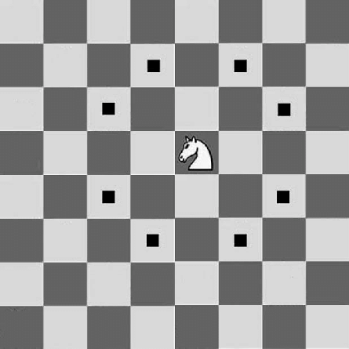
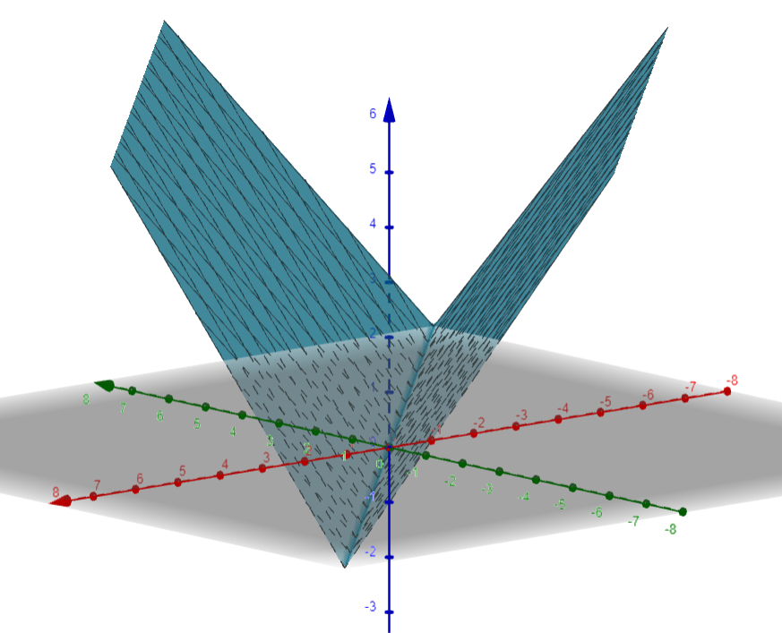

Hi, I'm Arvin Ding. I've always wanted to make a math video at some point, drawing inspiration from 3Blue1Brown and Mathologer. To fully flesh out my ideas, I decided to first create a blog version.
Generalized Knights
Recently I came across this competitive coding question.
TLDR: Given an \((\pm a,\pm
b)\) knight find minimum number of moves to reach \((x,y)\) where \(0\leq a,b,x,y \leq 10^9\).
With the help of Surya, we came to a fairly interesting solution;
Not sure if this is the intended solution, but I wanted to share our approach.

The knight can move in exactly 8 directions \((+a,+b),(+b,+a),(-a,+b),(-b,+a),(-a,-b),(-b,-a),(a,-b)\), and
\((b,-a)\) (these moves are all different if and only if \(a\neq b\)).
Perhaps, the first observation should be that a simple breadth first search or depth first search is far too
slow. We would potenially have to take up to \(10^{18}\) moves at which we would visit somewhere around the
order of \(10^{36}\) (far far far too large).
We need something more clever, some way to not compute the minimum path to every intermediate node/cell.
Let's build up to the solution.
Refactoring the problem
Our final sequence moves can be expressed as some linear combination of these 8 moves. Now note for any possible knight move the knight can also move in the opposite direction(make a move that cancels out the first). In fact, we can partition the moves into a 4 groups of 2 moves each which will cancel each other out: \[\{(+a,+b), (-a,-b)\},\{(+a,-b),(-a,+b)\},\{(+b,-a),(-b,+a)\},\{(-b,-a),(b,a)\}\] Because we are trying to minimize our moves, the optimal sequence of moves should only contain at most one type of move from each group. Also, note that knight can be partitioned into 2 groups of 4 moves, where each move is amount of 90 degree turns from every other move in the group. \[\{+a,+b\},\{-b,+a\},\{-a,-b\},\{b,-a\}\] \[\{+b,+a\},\{-a,+b\},\{-b,-a\},\{a,-b\}\] Now this is the first complex step. Recall that multiplication by complex number has a strong ties with rotation. So much so that multiplying a complex number by \(i\) yields the complex number that is the 90 degree rotation counter clockwise (assuming were viewing the complex numbers as point in the real imaginary plane). \[a+bi = i^0(a+bi)\] \[-b+ai = i(a+bi)\] \[-a+bi = i^2(a+bi)\] \[b-ai = i^3(a+bi)\] With this observation we can reformulate the questions comletely in terms of complex numbers. Namely,given integers \(a,b,x,y\) find integers \(m_0,m_1,m_2,m_3\) and integers \(n_0,n_1,n_2,n_3\) where \(m_0+m_1+m_2+m_3+n_0+n_1+n_2+n_3\) is minimized given \[m_0(i^0(a+bi))+m_1(i^1(a+bi))+m_2(i^2(a+bi))+m_3(i^3(a+bi))+n_0(i^0(a+bi))+n_1(i^1(b+ai))+n_2(i^2(b+ai))+n_3(i^3(b+ai))=x+yi\] Simplifying a tad we have \[(m_0-m_2)((a+bi))+(m_1-m_3)(i(a+bi))+(n_0-n_2)((b+ai))+(n_1-n_3)(i(b+ai))=x+yi\] By our observation that the optimal sequence of moves should never contain opposite moves, out of each group \(m_0\) & \(m_2\), \(m_1\) & \(m_3\), and so on at least one coefficient will be zero.In fact with this we can simplify the question to find integers \(m_0,m_1\) and integers \(n_0,n_1\) where \(|m_0|+|m_1|+|n_0|+|n_1|\) is minimized given \[m_0((a+bi))+m_1(i(a+bi))+n_0((b+ai))+n_1(i(b+ai))=x+yi\] \[(m_0+im_1)(a+bi)+(n_0+in_1)(b+ai)=x+yi\] following from the fact that we don't need 2 number to reprsent positive moves and negatives moves. Now the constraint may look oddly familar to some astute readers. Its very reminiscent of Bezout's lemma for integers, except we have complex number or more specifically complex number with integer coefficients instead of integers. While this is a cool coincidence, it's also actually helpful for solving the question because Bezout's lemma also applies to gaussian integers (complex numbers with integer coefficients, commonly denoted by \(\mathbb {Z} [i]\)).
Bezout's lemma states "Let \(a\) and \(b\) be integers with greatest common divisor \(d\). Then there exist integers \(x\) and \(y\) such that \[ax + by = d.\] Moreover, the integers of the form \(az + bt\) are exactly the multiples of \(d\)
Now let's see how we can adapt this to complex number. First, how do we even define gcd (greatest commond divisor) for complex numbers? Let the norm of gaussian integer \(x+yi\) be defined as \(N(x+yi)=x^2+y^2\). Also we say gaussian integer x divides y if and only f there exists a guassian integer z such that \[xz=y.\] Then the gcd gaussian integers \(a+bi\) and \(c+di\) is the number with the biggest norm that divide both \(a+bi\) and \(c+di\). Note that gcd is no longer unique (in fact we will have 4 gcds for a pair of gaussian integers). The standard euclidean algorithm for caluating the coefficents in Bezout's identity also holds the same given that in our notion of division when we divide guassian integer \(m\) by gaussian integer \(n\) we get gaussian integer \(q\) and gaussian integer \(r\) such that \(m=q*n+r\) where \(N(r)< N(n)\). For more rigorization on gaussian integers see this
This is all to say that with proper notions of various operations on guassian integers and the euclidean algorithm, we can calculate at least one solution \(m_0,m_1,n_0,n_1\) to our constraint \[(m_0+im_1)(a+bi)+(n_0+in_1)(b+ai)=x+yi\] given \(a,b,x,y\) by first caluating the (any) gcd \(g\) of \(a+bi\) and \(b+ai\) and the coefficents such that their linear combination equals g i.e. we can find gaussian integers \(k,l\) such that \[k(a+bi)+l(b+ai)=g.\] Then we can find if \(x+yi\) is divisble by g (if it's not then it's not possible to reach the target square and we are done;if it is we will show its always possible). We will x+yi is divisble by g for the rest of the writeup.By multiplying both sides by gaussian integer \(\frac{x+yi}{g}\) we find \[(k\frac{x+yi}{g})(a+bi)+(l\frac{x+yi}{g})(b+ai)=x+yi\] or in other words gaussian integers (gaussian integers are closed under multiplication) which provides a linear combinatino of (a+bi) and (b+ai) that equals (x+yi). This gives us at least one solution to our complex number question. We can translate what we have into a sequence of knight moves by looking at \(Re(k\frac{x+yi}{g})\), \(Im(k\frac{x+yi}{g})\), \(Re(l\frac{x+yi}{g})\), \(Im(l\frac{x+yi}{g})\). If \(Re(l\frac{x+yi}{g})\) is positive it represent the amount of times we take the \((+a,+b)\), if it is negative it represents the number of times we take (-a,-b) and similarly for the rest of the moves. But, this isn't enough. We have only found one solution. We need to find out of all solutions which solution takes the least steps.
Optimizing for the minimal solution
To recall our question is given integers \(a,b,x,y\) find gaussian integers \(m,n\) such that \[ m(a+bi)+n(b+ai)=x+yi\] Because we are assuming \(x+yi\) is divisble by \(g= \gcd(a+bi,b+ai)\), by dividing both sides of the equation by g we have \[m(\frac{a+bi}{g})+n(\frac{b+ai}{g})=\frac{x+yi}{g} \] This constraint is equivalent to the first(any gaussian integers m,n that satify one must satify the other). Therefore, by the first part we have found one solution to the former constraint and therefore also the latter and call it \(m',n'\) where both \(m',n'\)are gaussian integers such that \[m'(\frac{a+bi}{g})+n'(\frac{b+ai}{g})=\frac{x+yi}{g} \tag{1}.\] Now the key observation here is take any gaussian integers \(m,n\) that satisfy \[m(\frac{a+bi}{g})+n(\frac{b+ai}{g})=\frac{x+yi}{g} \tag{2}\] By subtracting equation 1 from equation 2 get that \[(m-m')(\frac{a+bi}{g}) + (n-n')(\frac{b+ai}{g})=0\] Now note that the \(gcd(\frac{a+bi}{g},\frac{b+ai}{g})\) is neccessarily norm one, otherwise g would not actually be the gcd. We can move terms around to get \[(m-m')(\frac{a+bi}{g})= (-n+n')(\frac{b+ai}{g})\] or that \[\frac{b+ai}{g}| (m-m')(\frac{a+bi}{g})\] in english we would say \(\frac{b+ai}{g}\) divides \((m-m')(\frac{a+bi}{g})\) which means there exists a gaussian integer such that when we multiply it by \(\frac{b+ai}{g}\) we get \((m-m')(\frac{a+bi}{g})\). Because \(\frac{b+ai}{g}| (m-m')(\frac{a+bi}{g})\) and \(\gcd(\frac{b+ai}{g},\frac{a+bi}{g})=1\) by Euclid's lemma (can be adapted to gaussian integers), \[(\frac{b+ai}{g})|(m-m').\] Now so we know \(m-m' = k\frac{b+ai}{g}\) for some gaussian integer \(k\). \[k\frac{b+ai}{g}(\frac{a+bi}{g}) + (n-n')(\frac{b+ai}{g})=0\] \[(n-n')(\frac{b+ai}{g})=-k\frac{b+ai}{g}(\frac{a+bi}{g})\] \[(n-n')=-k(\frac{a+bi}{g})\] Therfore \(n=n'-k(\frac{a+bi}{g})\) and \(m=m'+k(\frac{b+ai}{g})\) for some gaussian integer k are the only possible solutions to \[m(\frac{a+bi}{g})+n(\frac{b+ai}{g})=\frac{x+yi}{g} \] and we can verify that any gaussian integer \(k\) will work. We have now found the complete family of solutions to this constraint and by extension the intial constraint. Now how do we minimize over this family? Let's once again reword the problem with what we now know. Given guassian integers \(m',n',g\) (all derivable with the euclidean algorithm) and integers \(a,b\) find the gaussian integer \(k\) that minimizes \[|Re(n)|+|Im(n)|+|Re(m)|+|Im(m)|\] given that \(n=n'-k(\frac{a+bi}{g})\) and \(m=m'+k(\frac{b+ai}{g})\). Exanding \(m,n\) we get \[Re(n)=Re(n')-Re(k)Re(\frac{a+bi}{g})+Im(k)Im(\frac{a+bi}{g})\] \[Im(n)=Im(n')-Re(k)Im(\frac{a+bi}{g})-Im(k)Re(\frac{a+bi}{g})\] \[Re(m)=Re(m')+Re(k)Re(\frac{b+ai}{g})-Im(k)Im(\frac{b+ai}{g})\] \[Im(m)=Im(m')+Re(k)Im(\frac{b+ai}{g})+Im(k)Re(\frac{b+ai}{g})\] We done alot, but it's not clear that we are any closer to the answer.The last leap of faith
Imagine plotting \[z=|Re(n)|+|Im(n)|+|Re(m)|+|Im(m)|\] in the 3d space where \(x= Re(k),y= Im(k)\). Focusing on just one of these \[|Re(n)|\] it will look something like this
It's two planes stitched together at a line. The line formed by the points \((Re(k),Im(k),0)\) where \[0=Re(n')-Re(k)Re(\frac{a+bi}{g})+Im(k)Im(\frac{a+bi}{g})\] and z will increase poportionally to the distance of (Re(k),Im(k),0) from the line. Adding 4 of these together we will get something like.

A bunch of planes stitched together at various lines. If we project lines to xy plane they are exactly where \(Re(n)=0\), \(Im(n)=0\),\(Re(m)=0\),or \(Im(m)=0\). Now let's treat all of these regions seperately. More formally fix the sign of each term in \(Re(n), Im(n),Re(m),Im(m)\) and consider only the complex number k's that yield those signs. There should up to \(2^4\) or 16 regions. We want to minimize \[z=(\pm Re(n))+(\pm Im(n))+(\pm Re(m))+(\pm Im(m))\] where the sign depends for each term depends on which region we take. Note that the quantity is a plane, linear combination of Re(k) and Im(k). Additionaly we have 4 new constraints as dictated by the signs we took. For example, if we fix the signs to all be nonnegative our problem is now find the gaussian integer k which minimizes \[ Re(n)+Im(n)+ Re(m)+ Im(m)\] given \[Re(n)=Re(n')-Re(k)Re(\frac{a+bi}{g})+Im(k)Im(\frac{a+bi}{g}) \geq 0\] \[Im(n)=Im(n')-Re(k)Im(\frac{a+bi}{g})-Im(k)Re(\frac{a+bi}{g}) \geq 0\] \[Re(m)=Re(m')+Re(k)Re(\frac{b+ai}{g})-Im(k)Im(\frac{b+ai}{g}) \geq 0\] \[Im(m)=Im(m')+Re(k)Im(\frac{b+ai}{g})+Im(k)Re(\frac{b+ai}{g}) \geq 0\] Note that \(Re(n)+Im(n)+ Re(m)+ Im(m)\) is a linear combination of \(Re(k), Im(k)\) and every constraint is linear inequality with respect to \(Re(k),Im(k)\). We should also have 15 other subproblems for each other combination of signs.
This problem with its 2 free variables, a linear objective function, and linear inequality is now extremely similar to linear programming, a very well studied class of problems which is solvable in polynomial time. The only difference being our extra restriction that \(Re(k),Im(k)\) to be integers as k must be a gaussian integer. Nevertheless, even with this extra restriction the problem still falls in a well studied class of problems called integer programming, which is np complete (we have no polynomial time solution). However, this paper describes an algorithm to solve 2 variable integer programming in polynomial time. The key idea in the paper being that we can reduce integer programming to a feasbilty problem, specifically checking if some region contains a lattice point (point with integer coordinates) with binary search. To solve the feasbility issue, we define this notion of lattice width of convex regions. With this lattice width, we can categorize regions into wide (have lattice width over some contant) regions and flat regions. By the flatness theorem we know there must be at least one lattice point in wide regions. In the flat regions, we can split the problem into a constant number of 1 variable integer programming subproblems each of which can be solved quite simply. Applying this we can find the optimal k for each of the 16 subproblems and thereby find the global optima.
As a quick recap, we viewed knights moves as complex numbers, saw how we could find a solution to the generalized knights problem with euclids algorithm, and with this one solution we came up with a method to generate the complete family of solutions, out of which we can find the best one using a algorithm for 2 variable integer programming. The asymptotic runtime of this algorithm is also \(O(\log(a+b))\).
Failed(?) Approaches
This problem took us a fairly long time with many fruitless attempts. Here are some leads I tried taking.- I got stuck trying to generalize this oeis table.
- I also reworded the question into.
Find the integers \(p_1,q_1,p_2\) and \(q_2\) that minimize \[max(|p_1|,|q_2|)+max(|q_1|,|p_2|)\] given that \[ p_1a+q_1b=x, p_2a+q_2b=y\] and \[ q_1=p_2\pmod{2}, q_2=p_1\pmod{2}.\] Not sure if this would have lead anywhere, but I got fairly stuck with solving this. It's worth noting this is actually fairly similar to our solution. - Also tried coming up with some sort of greedy. Some notion that the knight should always travel in the general direction of the square. But facts around that were hard to state and harder to prove.
- We reduced the problem to minimum distance to 4 lines as seen above, but errneously thought that the lattice point with minimum distance would always have to be next to an intersection (works for the testcases of the problem, but not true in general).